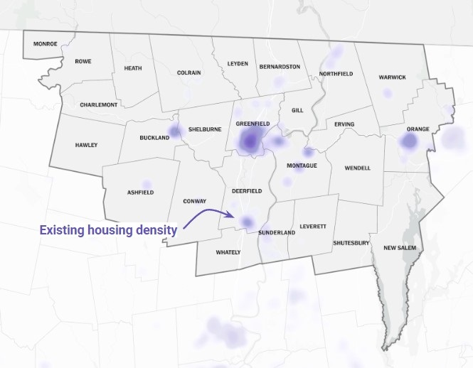
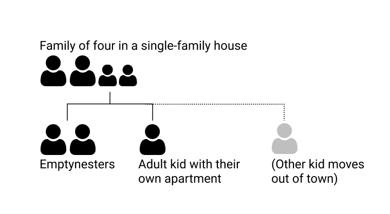
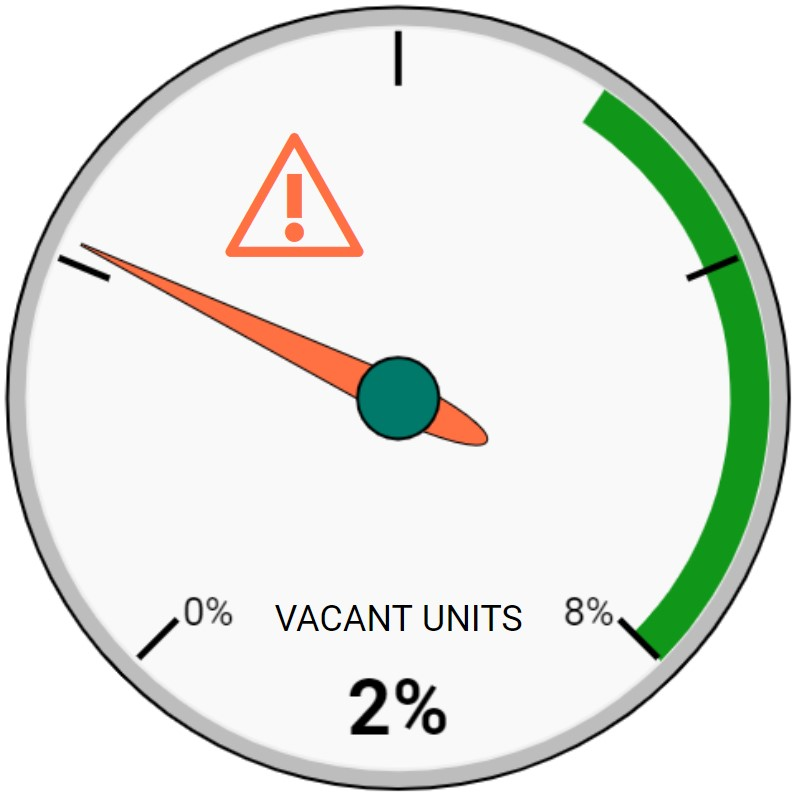

Honolulu Housing Plan Map |Overview | Indicators | Solutions | Next steps
Honolulu Housing Plan Map |Overview | Indicators | Solutions | Next steps
Honolulu Housing Plan Map |Overview | Indicators | Solutions | Next steps
This dashboard was created by CommunityScale for the County & City of Honolulu. The objective of this dashboard is to outline the plan's objectives and priorities, share key observations and findings about housing, and introduce possible solutions to increase housing production and address affordability challenges.
 Overview
Overview
Honolulu has launched a planning process to understand the local housing landscape and develop strategies and solutions that help meet current and projected needs across income levels. As a first step, Honolulu commissioned a housing study to gauge housing supply and demand across the county. This summer, Honolulu begins extensive community engagement to share findings from the study and promote ideas and recommendations that can help Honolulu County communities expand the housing supply to better meet the needs of local residents.

Preserve existing housing.
Preserve existing affordability of housing.

Create new housing.
Honolulu will implement the housing plan in several ways, including:
 Indicators
IndicatorsThough Honolulu County’s population is expected to decline over the next several years, the number of households will continue increasing, driving ongoing need for more housing units across the region. The phenomenon of declining population combined with growing household counts and increased housing demand is not unique to Honolulu County.

Many parts of the country are experiencing similar trends which are driven by two simultaneous factors: 1) larger families have fragmented into multiple households as children grow up and move out to form their own households. 2) household size is shrinking as seniors increasing live as empty nester couples or singles and their adult children have fewer children of their own.
In this way, a family of four can transition into multiple smaller households that require multiple housing units despite not representing additional individuals. In the event someone from the original family passes away or moves out of the region, the population can shrink along the way.
The housing study observed significant shortages of affordable housing across Honolulu County. There are not enough units priced at levels affordable to low-income and low-income households. On the other hand, there are more than enough units affordable to moderate-income and middle-income households. However, this misalignment between incomes and housing prices creates competition for the limited units available such that, in practice, most lower- and middle-income households likely feel the supply does not meet demand overall.

The housing study observed significant shortages of affordable housing across Honolulu County. There are not enough units priced at levels affordable to low-income and low-income households. On the other hand, there are more than enough units affordable to moderate-income and middle-income households. However, this misalignment between incomes and housing prices creates competition for the limited units available such that, in practice, most lower- and middle-income households likely feel the supply does not meet demand overall.
Prior to the pandemic, homeownership was financially attainable to the average household in Honolulu County: until 2022, a household earning the area’s median income could generally afford the area’s median home price. However, as housing markets have tightened, prices increased, and interest rates risen, an affordability gap has emerged that continues to trend in the wrong direction. As of this summer, a household earning the median area income falls $200k short of being able to afford the current median home price.
Honolulu County’s population is expected to dramatically shift toward older households over the coming years. Between 2010 and 2027, the 65+ age group will grow by over 7,000 households while nearly all other age groups shrink substantially.
This shift is driven by a combination of forces: the resident population is simply getting older; today’s families are having fewer children than previous generations; and an ongoing trend of younger people migrating out of the region and older people migrating in. From a housing perspective, this trend points to growing need for housing units suitable to seniors, including accessible design, fewer bedrooms, proximity to services, and affordability to fixed-incomes.
As the population ages and families have fewer children, local school enrollment has declined in nearly all county districts. More growth is needed - including new families with kids - to keep schools operating efficiently and avoid closures or consolidation.
 Solutions
Solutions
To meet the changing needs of Honolulu County’s current and future households, Honolulu County needs more housing units of a greater variety than currently exist in most local communities. In general, residents need more compact and efficient units suitable to smaller households that are more likely to include seniors. Options should include both rental and ownership across housing types.
While new units are needed throughout the county, a large share should focus in and around Honolulu County’s downtowns and village centers for walkable proximity to services, amenities, and transit connections. New development should include a variety of housing models that complement the county’s current majority of single-family houses, including:

GIven the high cost of construction and limited availability of development sites in many local communities, housing production should also include retrofitting existing structures.

Zoning is one of the most powerful ways to regulate housing development. In some Honolulu County communities, current zoning does not allow many of the housing types that would help address today’s housing shortage and affordability challenge. Other communities have amended their zoning over the years to permit a greater variety of housing options and development models in keeping with evolving need and demand. The most immediate and effective way to unlock opportunities for new housing production is to update local zoning codes to enable a wider range of housing types, such as tiny houses, duplexes, multifamily, mixed-use, adaptive reuse, ADUs and other models better aligned with local needs.
 Next steps
Next steps
Many of the most effective solutions to today’s housing challenges start with new policies at the local level. This requires action and engagement by community members interested in seeing change. To help make a difference, residents should get involved in the policymaking discourse through, for example, joining or contributing to planning boards, advocating at town meetings, participating in local planning activities, and writing letters to lawmakers and newspapers.

Honolulu Mayor’s Office of Housing drives policy and strategy for housing islandwide. The office leads cross-sector collaboration and policy change to stimulate the acquisition, development, and preservation of housing for all of Oahu’s residents, including the creation of pathways from homelessness to housing.
CommunityScale is a pioneering urban planning and spatial data analysis company serving clients across the United States.
Follow CommunityScale on LinkedIn and Twitter/X. This dashboard is open source MIT license.